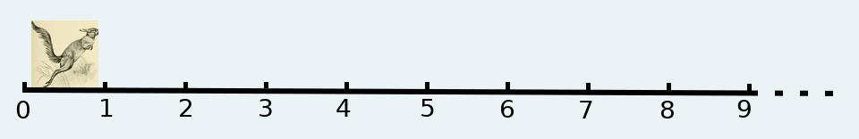

The whole numbers are created by God, all else is the work of man.
ℕ stands for ‘natural numbers’ aka ‘nats’, in everyday language also known as whole numbers. The attribute ‘natural’ suggests that you can find these numbers in nature. Kronecker’s quote at the top - though debatable - points towards the same belief: that God has created the nats as well as everything else around us. There is a variety of reasons why you may wish to object the quote. You believe that:
The author of this article subscribes to number two above. Just come to Fun-land, and I promise you’ll see all sort of mathematical entities. They will be walking on the streets, flying in the skies and swimming in the waters. You just need to be a true believer!! In any event - no matter what you think about mathematical existence - you can still use nats to count things that exist naturally around you, e.g. six ducks, eighty people, one million sand grains. At least in this sense, the attribute ‘natural’ should be acceptable.
The objects that you can count with nats are considered indivisible, at least in their natural state. You can’t have a part of a duck unless it has been cooked and cut, but then again, this is not its natural state. Similarly, under normal circumstances, you can’t have a part of a person, and even if, due to some unfortunate accident, someone is missing a member, you would still count them as a whole. Finally and most certainly, you can’t have any part of a sand grain. Even if you managed to cut one, you would only be splitting it into two grains. These examples explain why nats are also called integers or whole numbers: they count wholes, not parts.
One way to understand natural numbers is to stand up and start hopping on a straight line while counting. (Don’t worry if the line is not perfectly straight; mathematicians can also be sloppy from time to time). If you are too lazy, you can imagine a hopping rabbit, but I strongly recommend you get up and do some movement. Exercise oxygenates your brain and helps you learn. Anyway, eventually, you will run into an obstacle, and at that moment, you will have to stop and resort to the rabbit. (And yes, for those of you who are super-observant, the animal in the picture below is a hare, not a rabbit, but as I have already told you, mathematicians can be sloppy.)

Now, you might haven’t noticed it yet, because you have been too focused on the hopping, but your hops have some interesting properties. Firstly, there is an initial point. You did start from somewhere; you didn’t just appear out of thin air - although this would have been cool, and we’ll get there, Fun-land is full of magic! This initial point, your origin, is called zero and is the first nat. I must admit here that there is an ongoing heated debate about whether zero belongs to the natural numbers or not. After all, we said that nats are the numbers that we use to count, and most people, in most cases, start counting from one, not zero. Nevertheless, programmers are not most people and have this funny habit of starting from zero when they count. It may sound a bit weird, but in Fun-land, we love weird, it makes us feel special. So, for programmers’ sake, we’ll include zero in nats.Secondly, your hops have another intriguing quality: at each step, there is the possibility for one more jump. For sure, if you continue hopping, sooner or later, you’ll find a dead-end, or you’ll feel tired and - reality can be a bit restrictive occasionally. But this is why we have our imagination. So imagine you have superpowers, that you can destroy obstacles and are always young and strong. The truth is that even then, you would eventually stop. I assume you would have better things to do than eternally hopping. Still, if you wanted, you could go on forever and ever, and then at every hop, you would discover one more nat. There would be no end to them because each nat has a successor, the nat that follows immediately after. For example, six is the successor of five and ten is the successor of nine.
And finally, time for some programming. Open your ghci, type [0..] and press Enter. Your computer will go crazy producing numbers which you don’t even have the time to read. To stop this madness, press Ctrl+C. You will see a bunch of numbers on your screen. How large they are, depends on how much time you waited before stopping the calculation. If you wish, you can try different times and see the result.
What happened? [0..] represents a list, that is, a sequence of numbers. After the [, comes the first element of the list, in our case 0. The two dots that follow indicate that the list continues by adding one at each step. So the next number will be 1, and then 2, and 3 and 4 and? Notice that there is no number at the end of the list, so there is no termination point. Compare this with [0..20]. If you type this and press Enter, then your computer will print all the numbers from 0 to 20. But [0..] starts from zero and continues adding one forever. Does this remind you something? These are the nats. Your computer has superpowers! Or almost. It doesn’t get tired and can jump from one number to the next with a speed that can make your head spin. Your computer will eventually crash, but I suggest you don’t wait for that long; it could take a lifetime!
Since we established that [0..] produces the nats, I hope you won’t object writing (in ghci) nats=[0..]. If you press Enter now, nothing will happen. This is because you haven’t asked the computer to calculate anything. You have only informed it that you wish to give the name ‘nats’ to the list [0..]. However, if after doing this, you type nats and press Enter, the computer will understand that you want it to calculate the value that corresponds to the name ‘nats’, so it will go on as before, starting to produce all the natural numbers.
So far, so good. But ghci is limited. So let’s try writing some code with sublime text. Open the editor, and before doing anything else, go to File, select Save As, and save the file as nats.hs. Doing this tells sublime text that this file contains Haskell code. Then type:
module Nats where
nats0=[0..]The first line is the standard preamble for Haskell code. Line 3 is the code that we previously wrote in ghci. The only difference is that I have used the name nats0 instead of nats because I plan to define natural numbers in many ways and use the names nats0, nats1, nats2 etc. Notice how the names start from nats0, not nats1. Do you remember that we said that programmers start counting from 0?